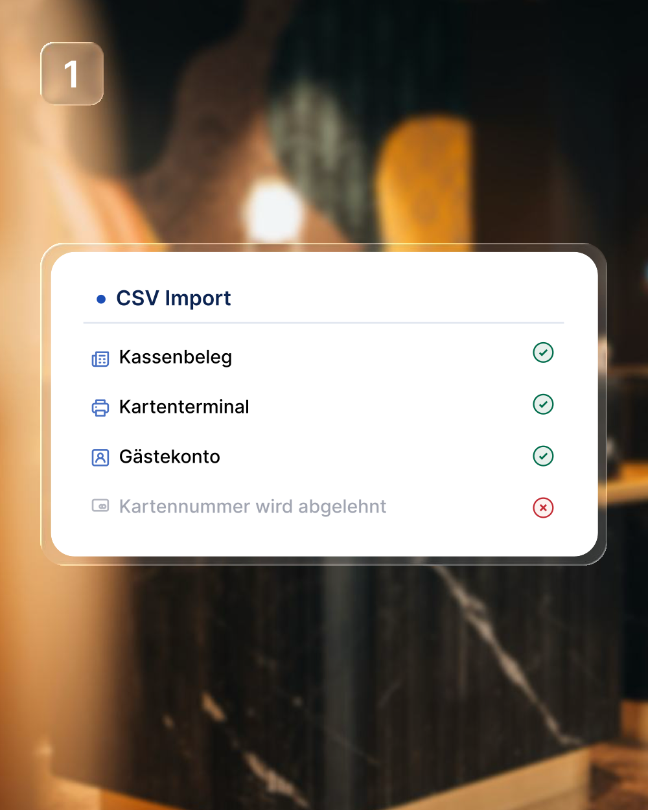
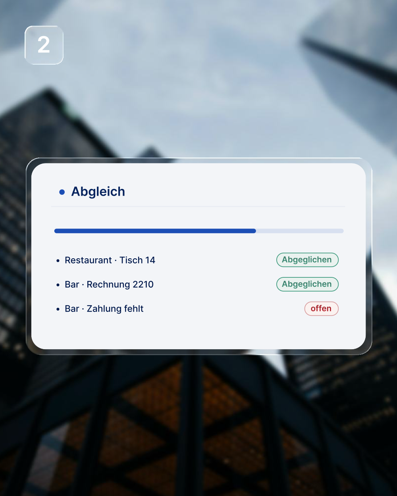
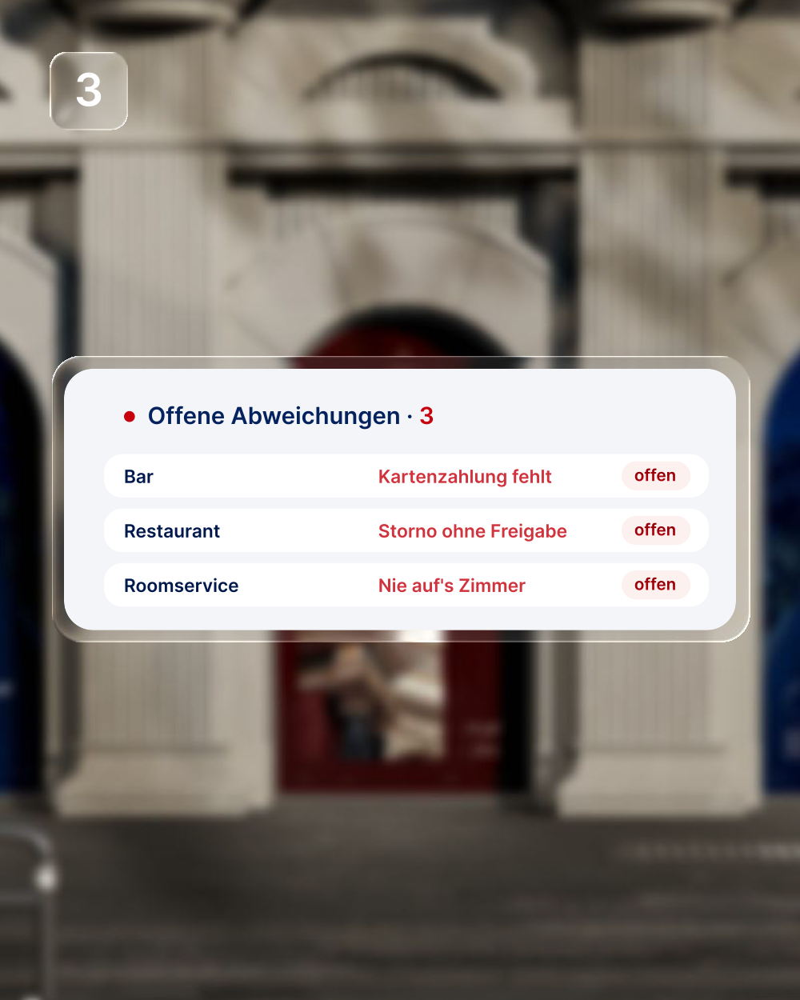

Exporte einlesen
Kassenbelege, Terminal-Abschluss und Gästekonten — die Dateien, die Ihre Systeme ohnehin erzeugen. An der Kasse ändert sich für Ihr Team nichts.

Closewise prüft den Abend gegen Kartenterminal, Gästekonten und Kassenzählung — und legt Ihrer Schichtleitung am Morgen die kurze Liste hin.
4 Quellen je Nacht 8,5 Minuten statt 60–70 3–7 offene Punkte
Demodaten. So sieht die Liste aus, die morgens auf dem Tisch liegt.
Vier Auswertungen entstehen jede Nacht ohnehin. Closewise legt sie übereinander und zeigt, wo sie nicht deckungsgleich sind.
Kassenbelege, Terminal-Abschluss und Gästekonten — die Dateien, die Ihre Systeme ohnehin erzeugen. An der Kasse ändert sich für Ihr Team nichts.

Jeder Beleg wird gegen die anderen Quellen gehalten: Betrag gegen Betrag, Buchung gegen Konto. Was übereinstimmt, wird abgehakt.

Übrig bleiben drei bis sieben Punkte je Nacht, jeder mit Outlet, Beleg und Ursache. Den Rest hat Closewise schon abgehakt.

Restaurant, Bar, Roomservice, Bankett. Closewise übernimmt den Abschluss für jeden Betrieb — und zeigt das Haus in einer Ansicht.
Stellen Sie Ihr Haus ein und sehen Sie, wie viel Handarbeit im Nachtabschluss steckt.
Gerechnet mit 2,5 Minuten fürs Öffnen und 1,5 Minuten je Abweichung bei vier Abweichungen in einer normalen Nacht, also 8,5 Minuten je Outlet, an 360 Nächten im Jahr. Abzüglich 9.600 € im Jahr für Closewise. Eine Schätzung nach Ihren Angaben, keine Zusage.
Closewise ersetzt keins Ihrer Systeme. Es liest, was sie erzeugen, und prüft in derselben Nacht, ob es zusammenpasst.
Nein. Closewise liest die Exporte, die Ihre Systeme ohnehin erzeugen: die Belege aus den Outlets, den Terminal-Abschluss und die Buchungen auf den Gästekonten. An der Kasse ändert sich nichts.
Ihre Schichtleitung öffnet die Liste und klärt die Abweichungen, in einer typischen Nacht drei bis sieben Punkte. Die Kassenzählung bleibt Handarbeit: Wie viel in der Lade liegt, trägt ein Mensch ein.
Dann prüft Closewise gegen die übrigen und sagt nichts zu der fehlenden. Ohne die Gästekonten werden Zimmerbuchungen also nicht als Fehler markiert, sondern gar nicht bewertet.
Beträge, Zeitstempel, Zahlarten, Tisch- und Zimmernummern. Vollständige Kartennummern lehnt der Import ab. Die Datenbank liegt in der EU, in eu-west-1 in Irland.
800 € im Monat je Haus, unabhängig von der Zahl der Outlets.
Ja. Wir gehen einen Nachtabschluss gemeinsam durch, von vorn bis hinten, und klären dabei, welche Exporte Ihr Haus dafür liefern muss. Das dauert etwa zwanzig Minuten.
Wir zeigen Ihnen einen Nachtabschluss von vorn bis hinten und gehen gemeinsam durch, was die Exporte aus Ihrem Haus dafür liefern müssen.